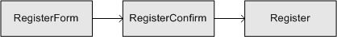

戻る
最終更新日: 2011 年 2月 10 日
トランザクショントークンとは
会員登録のようなウィザード形式による画面遷移があるとします。

通常、ユーザは RegisterForm を経て RegisterConfirm、Register の順で画面を遷移します。しかしこの時、もし正当な順序で遷移が行われず、直接 Register アクションが起動されたらプログラムは正常に動作するでしょうか。
恐らく RegisterConfirm から送られてくる筈のデータが未送信のため、不正な動作が起こる筈です。
ビヘイビアの設定によって、Register アクションの起動は POST リクエストが送信された場合のみに制御することも可能ですが、これでもまだ不十分です。悪意を持つユーザが Register アクションに直接 POST リクエストを送信する可能性があるためです。
また、Register アクション上で画面をリロードすると、リロードした回数分、データが登録されることも予想されます。
これらの問題に対処する方法として、トランザクショントークンという仕組みが用意されています。
トランザクショントークンの仕組みは次の通りです。
- 一意のトークン ID を発行。ID をセッションに保持する。
- 発行した ID をフォームの hidden に保持し、次の画面に遷移。
- フォームから送信されてきた ID とセッションに格納されている ID を比較。ID が一致していれば正しい遷移とみなす。
トランザクショントークン
先ほどの遷移図を元に、実際にトランザクショントークンを導入してみましょう。
初めに遷移開始元となる RegisterForm アクション上でトークン ID を発行します。saveToken() メソッドは、SHA1 による 40 ビットのハッシュ値を生成し、発行した ID をユーザオブジェクト (Delta_AuthorityUser) に設定します。
- PHP Code# actions/{module}/RegisterFormAction.php
$this->getUser()->saveToken();
RegisterForm、RegisterConfirm のビューにトークン ID を埋め込みます。トークン ID は Delta_FormHelper::close() メソッドを使うことで自動的に生成されます。
- Template Code# templates/{module}/register_form.php
<?php echo $form->start() ?>
<?php echo $form->submit('確認') ?>
<?php echo $form->close() ?>
Delta_FormHelper::get('tokenId') で発行したトークン ID を取得することもできます。
生成される HTML は次のようなコードになります。ここで tokenId に文字列が格納されますが、この値は saveToken() を実行する度に毎回新しい値が設定されます。
- HTML Code#
<form action="/registerConfirm.do" method="post">
<input type="submit" value="確認" />
<input type="hidden" name="tokenId" value="23fe1eb1bebe8739af0b5cddf7882300be346802"/>
</form>
RegisterConfirm も同様に実装します。RegisterForm から正常に遷移した場合は、前画面で発行したトークン ID が引き継がれます。もしこのページにダイレクトにアクセスした場合、tokenId の値は空になります。
- Template Code# templates/{module}/register_confirm.php
<?php echo $form->start() ?>
<?php echo $form->submit('登録') ?>
<?php echo $form->close() ?>- HTML Code#
<form action="/register.do" method="post">
<input type="submit" value="登録" />
<!-- RegisterForm で生成した ID を引き続き保持する -->
<input type="hidden" name="tokenId" value="23fe1eb1bebe8739af0b5cddf7882300be346802"/>
</form>
「登録」ボタンを押下すると Register アクションに遷移します。Register アクションでは不正な画面遷移が行われていないか、フォームの二重送信が行われていないかのチェックを実装します。
- PHP Code# modules/{module}/actions/RegisterAction.php
public function execute()
{
$user = $this->getUser();
switch ($user->getTokenState()) {
// 画面遷移は正常に行われた
case Delta_AuthorityUser::TOKEN_VALID:
break;
// 画面遷移が不正 (二重送信の可能性)
case Delta_AuthorityUser::TOKEN_INVALID:
break;
// トークン ID が存在しない
case Delta_AuthorityUser::TOKEN_WRONG:
break;
}
// セッションに格納されているトークン ID を破棄
$user->resetToken();
}
getTokenState() メソッドが返す定数は次の通りです。
| 定数名 | 説明 |
|---|---|
| Delta_AuthorityUser::TOKEN_VALID | トークンの状態は正常。トランザクションをコミットするには、resetToken() メソッドを使用します。(resetToken() メソッドを実行するとセッションに格納されているトークン ID は破棄されます) |
| Delta_AuthorityUser::TOKEN_INVALID | セッションに格納されているトークン ID とフォームから送信されてきた ID が異なる場合に発生。TOKEN_VALID が返された後で resetToken() を実行した場合、2 回目の呼び出し時は TOKEN_INVALID が返されます。 |
| Delta_AuthorityUser::TOKEN_WRONG | セッションにトークン ID が格納されておらず、フォームからも ID が送信されなかった場合に発生。 |